Charades · Animals · page 11/13 · all packs
Reject an image by adding its slug to public/charades/charades-animals/reject.txt (append ! to keep it word-only), then re-run node scripts/genimages.mjs.
1 2 3 4 5 6 7 8 9 10 11 12 13 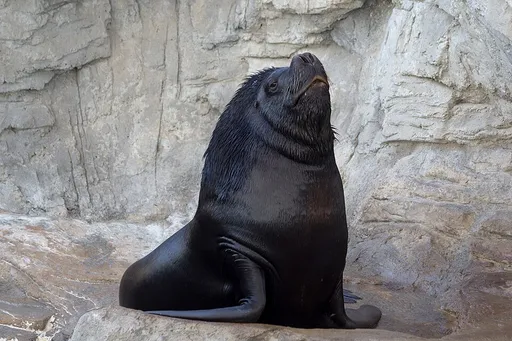
Sea lion sea-lionCC BY-SA 4.0 · Katie Chan · source 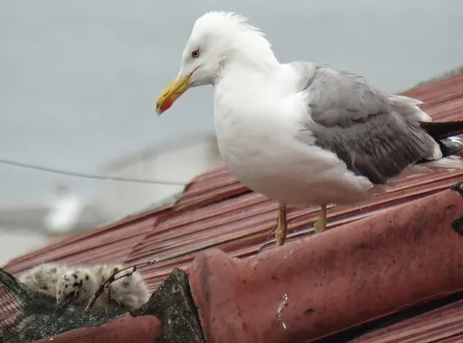
Seagull seagullCC BY 4.0 · Zafer · source 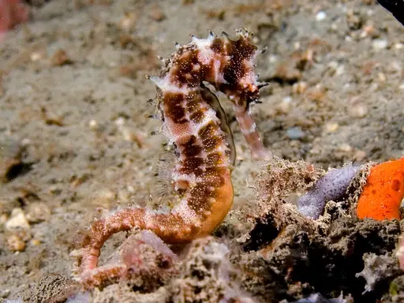
Seahorse seahorseCC BY-SA 3.0 · Nhobgood Nick Hobgood · source Seal sealCC0 · Armael · source 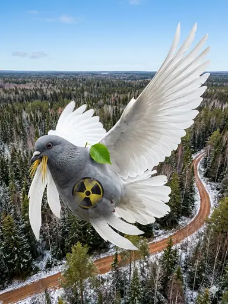
Shark sharkCC0 · Шаэ · source 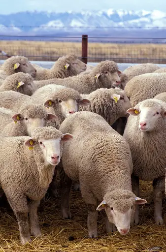
Sheep sheepPublic domain · Keith Weller · source 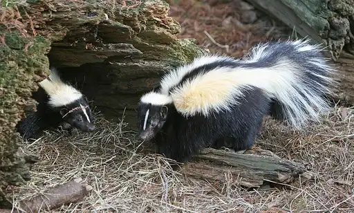
Skunk skunkCC BY 3.0 · http://www.birdphotos.com · source 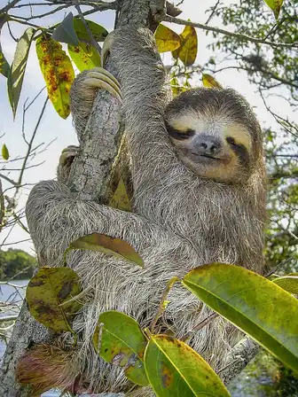
Sloth slothPublic domain · Stefan Laube (Tauchgurke) · source 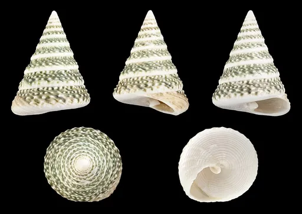
Snail snailCC BY-SA 3.0 · H. Zell · source 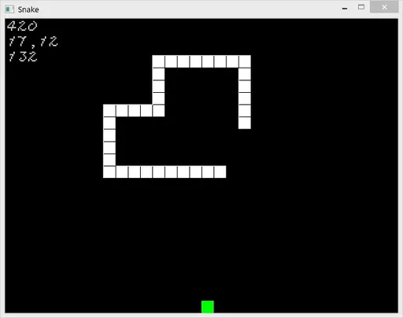
Snake snakePublic domain · 골사 ( https://onscript.tistory.com ) · source 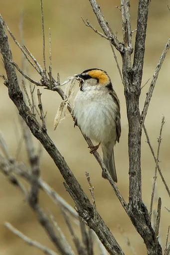
Sparrow sparrowCC BY-SA 2.0 · Francesco Veronesi from Italy · source 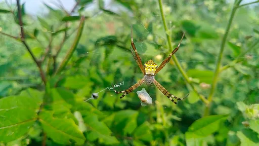
Spider spiderCC BY-SA 4.0 · Guruleninn · source 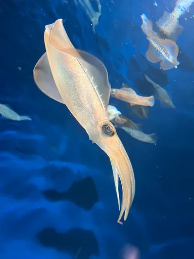
Squid squidCC BY 4.0 · Versions111 · source 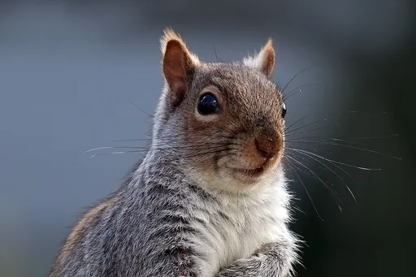
Squirrel squirrelCC BY-SA 4.0 · Charles J. Sharp · source 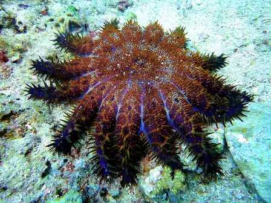
Starfish starfishCC BY-SA 4.0 · Matt Kieffer · source 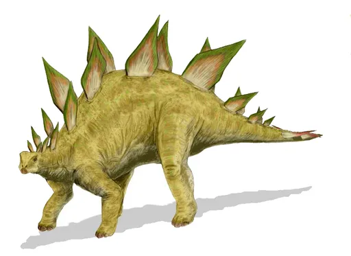
Stegosaurus stegosaurusCC BY 2.5 · Nobu Tamura (http://spinops.blogspot.com) · source 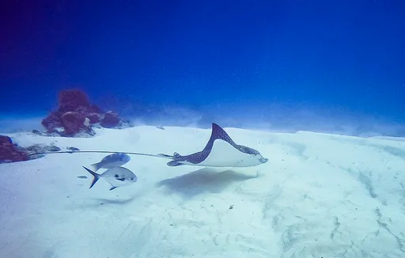
Stingray stingrayCC BY-SA 4.0 · Matthew T Rader · source 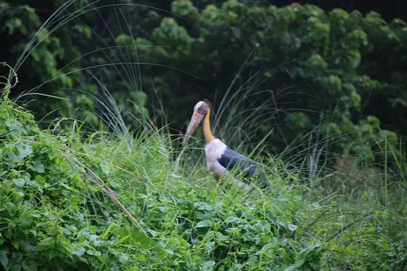
Stork storkCC0 · Ankit Suresh · source 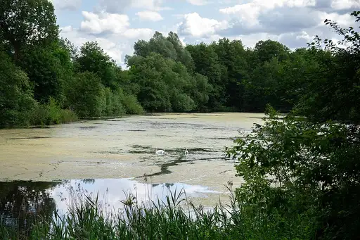
Swan swanCC0 · Sateessa · source 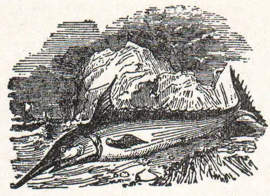
Swordfish swordfishPublic domain · Unknown authorUnknown author · source 1 2 3 4 5 6 7 8 9 10 11 12 13